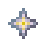
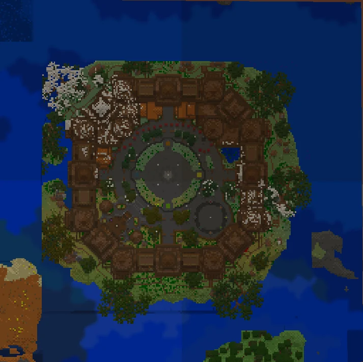

Spawn map
What is at spawn, what it does for you, and how to reach the other places.
The map

Getting around
| What | What it does |
|---|---|
| Wilderness NPC | Takes you out to explore: a random teleport, or Freeplay and KOTH. The name tag shows how many players are there. |
| Guide NPC | The server handbook: how to start, safety, factions, the economy, warps, rules and socials. |
| Lecterns | Use one to open the How to Play tutorial. |
| Parkour | Reach the top for a random reward: a Common key, an Epic key or +1 max heart. You can claim it once every 15 minutes. |
| AFK zone | Stand in it and you earn coins every 10 seconds. You cannot be put in combat there. |
| Fishing pond | Fish with custom rods. See Fishing. |
Money
| NPC | What it does |
|---|---|
| Shopkeeper | The server shop. See Shop. |
| Auctioneer | The Auction House. |
| Blacksmith | Bounties. |
| Vaults NPC | Your personal vaults. |
| Farmer | Trades items for coins or XP. It offers 3 random trades and restocks every hour. |
| Hunter | Works like the Farmer with a different stock. It sometimes sells a Heart for 60,000 coins or a Soul Bottle for 20 XP levels, 3 of each at most. |
| Stats NPC | Your stats. |
Rewards
| What | What it does |
|---|---|
| Starter chest | Right click it to get your starter gear back. See Getting started. |
| Daily Rewards NPC | Your daily gift. Its name tag shows the time left, "Ready to claim!" or your streak. |
| Voting NPC | The vote sites and their rewards. See Voting. |
| Battlepass NPC | Claim your season rewards on the free and premium tracks. See Battlepass. |
| Crates | Common, Epic and Mythic crates. Click one with a key to open it, or hit it to preview what is inside. See Crates. |
| Discord block | Click it to open the Discord and Discord Kit menu. |
| Discord Kit NPC | Wumpus, under a Discord logo sign. Link your account and claim the Discord Kit. See Discord. |
| Loot drops | Every 15 minutes a drop lands at spawn or in the PvP Arena, taking turns. It can hold keys, Hearts, golden apples, totems and spawners. |
| Creator NPC | Information on creator rewards. |
PvP
| NPC | What it does |
|---|---|
| PvP NPC | Pick the PvP Arena (free for all) or 1v1 duels. See Duels. |
| Lifesteal NPC | Withdraw hearts, revive a player, the lifesteal shop and how lifesteal works. See Lifesteal. |
| Podiums | Three podiums show the top three players with their skins. |
You cannot be hurt at spawn, so a fight here is never a real one. Hitting another player opens their profile with Ask to Duel and Trade buttons.
Cosmetics
| NPC | What it does |
|---|---|
| Cosmetics mannequin | Shows the donator cosmetics. Click it to browse. It only opens on a click, not a hit. See Cosmetics. |
| Emote NPC | A pink mannequin that dances. Crab rank holders get the emotes screen; everyone else sees what the rank adds. |
| Store NPCs | The ranks store. Two of them open the store, and the one with the floating Crab Plus sign opens the ranks page. See Ranks. |
Information
| What | What it does |
|---|---|
| Discord NPC | Join the Discord. A button prints the invite in chat. |
| Update board | A floating list of the last ten updates. |
| Wandering crabs | Just decoration. Do not hit them. |
Hitting an NPC opens its menu just like a click does.
What spawn does to you
- No damage. All damage to players is cancelled within 400 blocks of the spawn point.
- No building. You cannot break or place blocks within 1,000 blocks. See The world.
- Flight and double jump. Jump twice to double jump. With a Crab rank, /fly turns flight on. Both work only at spawn.
- Full hunger. Inside the spawn area your food is kept full and fire is put out.
- No monsters. Hostile mobs do not spawn in the spawn area, the PvP Arena or the Nether hub.
- Limits. Ender pearls and chorus fruit do not work in the spawn area, and you cannot glide with an elytra.
- Profiles. Hitting a player opens their profile. They are told you looked unless they turned that off.
- No damage
- Within 400 blocks
- No building
- Within 1,000 blocks
- Parkour reward
- Every 15 minutes
- Loot drops
- Every 15 minutes
- AFK coins
- Every 10 seconds
Other places
Open the MENU item, then Warps, or type . Each button shows how many players are there.
| Place | What it is | How to get there |
|---|---|---|
| Free for all combat. You are safe for 5 seconds after arriving, though you can attack. The Fallen Knight boss also appears here. See Events. | Warps, PvP Area, then the arena, or the PvP NPC. | |
| One duel at a time. You keep your gear and lose nothing. See Duels. | Warps, PvP Area, then duels, or /duel. | |
| Open PvP in the real world, home of King of the Hill. Bring gear you are willing to lose. The arrival spot is safe. | Warps, Freeplay / KOTH. | |
| A safe zone in the Nether with no PvP and no mobs. | There is no warp for it. It is where a random Nether teleport puts you if it cannot find a spot. | |
| Earns coins while you are away. | Warps, AFK Zone. | |
| Places you set yourself. | Warps, Your Homes, or /home. See Teleports and homes. |
Check before you go
Taking the Server Spawn button from far away asks you to set a home first, because staff will not teleport you back to your old spot. You also cannot teleport while you are in combat. See Combat.